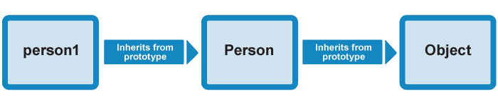

Learn-对象
在 JavaScript 中，大多数东西都是对象
从 core JavaScript features 如数组 到 建立在 JavaScript 之上的浏览器 APIs。您甚至可以创建自己的对象，以将相关函数和变量封装 (encapsulate) 到高效的 packages 中，并充当方便的数据容器。如果您想进一步了解该语言，理解 JavaScript 的基于对象的本质 (object-based nature) 很重要。
1 对象基础¶
对象基础
对象是相关数据 和/或 功能 (functionality) 的集合（collection, 通常由几个变量和函数组成 - 当它们位于对象内部时称为 属性 (properties) 和方法 (methods) 。）
一个对象由多个成员 (members) 组成，每个成员都有一个名称（name, 例如 name 和 age）和一个值（value, 例如['Bob', 'Smith'] 和 32）。每个 名称/值 对必须用逗号分隔，并且名称和值在每种情况下都用冒号分隔。语法始终遵循以下模式：
const objectName = {
member1Name: member1Value,
member2Name: member2Value,
member3Name: member3Value
};
对象成员的值几乎可以是任何东西 - 在我们的 person 对象中，我们有一个字符串，一个数字，两个数组和两个函数。前四个 items 是 data items，被称为对象的属性 (properties) 。最后两个 items 是允许对象使用该数据执行某些操作 (do something) 的函数，被称为对象的方法 (methods) 。
像这样的对象称为对象字面量 (object literal) - 在创建对象时，我们已经照字面写出了对象内容 (literally written out the object contents)。这与从类实例化的对象 (objects instantiated from classes) 形成对比，我们将在后面讨论。
当您想以某种方式传输一系列结构化的相关数据项时，例如使用向服务器发送请求以将其放入数据库中，使用对象字面量创建对象是很常见的。发送单个对象比单独发送多个项目要有效得多，并且当您要通过名称 (name) 标识 (identify) 单个项目时，比数组更容易使用。
Dot notation (点表示法)
对象名称 (name) 充当 (act as) 命名空间 (namespace) - 必须首先输入它才能访问封装在对象内部的所有内容。接下来，您写一个点，然后是要访问的项目 - 这可以是简单属性 (property) 的名称 (name) ，数组属性的一项 或 对一个对象方法的调用，例如：
person.age
person.interests[1]
person.bio()
Sub-namespaces (子命名空间)
甚至可以用一个对象来做另一个对象成员的值。例如，将 name 成员
name: ['Bob', 'Smith'],
改成
name : {
first: 'Bob',
last: 'Smith'
},
在这里，我们实际上创建了一个子命名空间。这听起来很复杂，但实际上并非如此 - 要访问这些项目，您只需要 chain the extra step onto the end with another dot。
person.name.first
person.name.last
methods 也要改
name[0]
name[1]
改为
name.first
name.last
Bracket notation (括号表示法)
另一种访问对象属性 (properties) 的方法
person.age
person.name.first
可以是
person['age']
person['name']['first']
这看起来与访问数组中的项目的方式非常相似，并且基本上是同一件事 – 不是使用索引号 (index number) 来选择项目，而是使用与每个成员 (member) 的 value 关联的 name。难怪对象有时被称为关联数组 (associative arrays) - 它们将字符串映射到值的方式与数组将数字映射到值的方式相同。
Setting object members (设置对象成员)
- retrieving (or getting) object members
- set (update) the value of object members
person.age = 45;
person['name']['last'] = 'Cratchit';
设置成员不只可以更新现有属性和方法的值。你也可以创建全新的成员。
括号表示法的一个有用方面是，它不仅可用于动态设置成员值，而且还可用于设置成员名。
let myDataName = nameInput.value;
let myDataValue = nameValue.value;
然后，我们可以将这个新的成员名称和值添加到 person 对象中
person[myDataName] = myDataValue;
点表示法无法使用上述方法向对象添加属性，点表示法只能接受 a literal member name，而不能接受指向 name 的变量值
this
this 关键字 是指 (refers to) the current object the code is being written inside - 所以在这种情况下，this 等同于 person。那么，为什么不直接写 person 呢？当我们开始创建构造函数 (start creating constructors) 等时，this 非常有用 - 它始终确保在成员的上下文 (a member's context) 更改时使用正确的值（例如，两个不同的 person 对象实例 (instances) 可能有不同的 names，但当我们调用它们的 greeting 时 想要使用它们自己的 name）。
const person1 = {
name: 'Chris',
greeting: function() {
alert('Hi! I\'m ' + this.name + '.');
}
}
const person2 = {
name: 'Deepti',
greeting: function() {
alert('Hi! I\'m ' + this.name + '.');
}
}
如前所述，this 等于 the object the code is inside - 用手编写对象字面量 (object literals) 时这并不是很有用，但是当您动态生成对象（例如使用构造函数 (constructors)）时，它确实会发挥作用。
你一直在使用对象
myString.split(',');
You were using a method available on an instance of the String class. Every time you create a string in your code, that string is automatically created as an instance of String, and therefore has several common methods and properties available on it.
const myDiv = document.createElement('div');
const myVideo = document.querySelector('video');
You were using methods available on an instance of the Document class. For each webpage loaded, an instance of Document is created, called document, which represents the entire page's structure, content, and other features such as its URL. Again, this means that it has several common methods and properties available on it.
内置对象和 API 并非总是自动创建对象实例
Notifications API，要求你使用构造函数为要触发的每个通知实例化一个新的对象实例
const myNotification = new Notification('Hello!');
Note
It is useful to think about the way objects communicate as message passing — 当一个对象需要另一个对象执行某种操作 (action) 时，它通常会通过 one of its methods 将消息发送给另一个对象，并等待响应 (response) ，即我们所知的返回值。
2 Object-oriented (面向对象) JavaScript for beginners¶
我们现在集中于 object-oriented JavaScript (OOJS) -- 本文介绍了 object-oriented programming (OOP) 理论的基本观点, 然后探索 JavaScript 如何通过构造函数 emulates (模拟) object classes, 和如何创建 object instances.
OOP
The basic idea (基本思想) of OOP 是我们用对象 model 要在程序中表示的现实世界中的事物, 和/或提供一种简单的方法来访问原本很难或不可能利用的功能 (functionality) 。
对象可以包含相关的数据和代码，这些数据和代码表示 (represent) 有关您要 model 的事物以及所需功能 (functionality) 或行为 (behavior) 的信息。对象数据（通常函数也是）可以整齐地存储（stored neatly, the official word is encapsulated）在 object package 中（可以给它指定一个特定的名称以进行引用，有时也称为 namespace ），从而易于 structure 和 access; 对象也通常用作数据存储 (data stores) that can be easily sent across the network。
Defining an object template
This is known as abstraction (抽象) — creating a simple model of a more complex thing, which represents its most important aspects in a way that is easy to work with for our program's purposes.
Creating actual objects
From our class, we can create object instances — objects that contain the data and functionality defined in the class.
When an object instance is created from a class, the class's constructor function is run to create it. This process of creating an object instance from a class is called instantiation — the object instance is instantiated from the class.
Specialist classes
In this case we don't want generic people — we want teachers and students, which are both more specific types of people. In OOP, we can create new classes based on other classes — these new child classes can be made to inherit the data and code features of their parent class, so you can reuse functionality common to all the object types rather than having to duplicate it. Where functionality differs between classes, you can define specialized features directly on them as needed.
The fancy word for the ability of multiple object types to implement the same functionality is polymorphism (多态性) .
Constructors and object instances¶
JavaScript 使用特殊函数 constructor functions to define and initialize objects and their features.
一个简单的例子
// a bit long-winded
function createNewPerson(name) {
const obj = {};
obj.name = name;
obj.greeting = function() {
alert('Hi! I\'m ' + obj.name + '.');
};
return obj;
}
// constructor functions
function Person(name) {
this.name = name;
this.greeting = function() {
alert('Hi! I\'m ' + this.name + '.');
};
}
构造函数是 JavaScript 版本的类。请注意，它具有你所期望的函数中的所有功能，尽管它不返回 anything 或显式创建对象 (explicitly create an object) - 它基本上只是定义属性和方法。还要注意这里也使用了 this 关键字 - 基本上是说，只要创建这些对象实例之一，该对象的 name 属性就等于传递给 constructor call 的 name 值，并且 greeting() 方法也将使用传递给 constructor call 的 name 值。
注意：A constructor function name 通常以大写字母开头 - 此约定用于使构造函数在代码中更易于识别。
注意，当我们调用构造函数时，每次都会定义 greeting()，这并不理想。为避免这种情况，我们可以在原型上定义函数。
Other ways to create object instances
So far 我们已经看了两种方式 to create an object instance
- declaring an object literal,
- and using a constructor function (see above).
其他方式：
The Object() constructor
let person1 = new Object();
person1.name = 'Chris';
person1['age'] = 38;
person1.greeting = function() {
alert('Hi! I\'m ' + this.name + '.');
};
let person1 = new Object({
name: 'Chris',
age: 38,
greeting: function() {
alert('Hi! I\'m ' + this.name + '.');
}
});
Using the create() method
Constructors can help you give your code order — you can create constructors in one place, then create instances as needed, and it is clear where they came from.
但是，有些人更喜欢创建对象实例而不必先创建构造函数，尤其是当他们仅创建几个对象实例时。JavaScript 具有称为 create() 的 built-in method 允许你这么做。您可以基于任何现有对象创建一个新对象。
let person2 = Object.create(person1);
person2.name;
person2.greeting();
create() 的一个限制是 IE8 不支持它。因此，如果您想支持较旧的浏览器，构造函数可能会更有效。
3 Object prototypes¶
原型是一种机制，JavaScript 对象通过该机制继承特征 (features) 。在本文中，我们将解释原型链 (prototype chains) 如何工作，并研究如何使用 prototype 属性 (propety) 将 methods 添加到现有构造函数中。
how to add new methods onto the prototype property.
A prototype-based language?
JavaScript 通常被描述为一种基于原型的语言 — 为了提供继承，对象可以有 prototype object，它充当模板对象 (template object)，从中继承方法和属性。
一个对象的原型对象可能也有一个原型对象，该对象从中继承了方法和属性，依此类推。这通常被称为原型链 (prototype chain)，并解释了为什么不同的对象具有在其他对象上定义的属性和方法可用。
在 JavaScript 中，对象实例与其原型（其 __proto__ 属性是从 构造函数上的 prototype 属性派生的 (derived from) ）之间建立了链接 (link) ，并且通过沿原型链向上查找来找到属性和方法。
Note
理解对象的 prototype（可以通过 Object.getPrototypeOf(obj) 或者已被弃用的 (deprecated) __proto__ porperty 获得）与构造函数的 prototype property 之间的区别是很重要的。
前者是每个实例上都有的 property，后者是构造函数的 property。也就是说，Object.getPrototypeOf(new Foobar()) 和 Foobar.prototype 指向着同一个对象。
了解原型对象

我们想重申，方法和属性不会在原型链 (prototype chain) 中从一个对象复制到另一个对象。通过如上所述沿着链条向上 (walking up the chain) 访问它们。
Note
但是，大多数现代浏览器的确提供了称为 __proto__ 的可用属性，其中包含对象的构造函数的 prototype object。例如，尝试 person1.__proto__ 和 person1.__proto__.__proto__ 看看代码中的原型链是什么样的！
The prototype property: Where inherited members are defined
As mentioned above, the inherited ones are the ones defined on the prototype property (你可以称之为子命名空间 sub-namespace) — that is, the ones that begin with Object.prototype., and not the ones that begin with just Object. prototype property 的值是一个对象, which is basically a bucket for storing properties and methods that we want to be inherited by objects further down the prototype chain.
// By default, a constructor's prototype always starts empty
Person.prototype
Important
prototype property 是 JavaScript 中最 confusingly-named 的部分之一 -- 您可能认为 this 指向当前对象的原型对象，但事实并非如此（这是一个内部对象 (internal object) ，可以通过 __proto__ 访问，记得吗？）。prototype 是一个包含对象的属性，您可以在该对象上定义要被继承的成员。
Revisiting create()
let person2 = Object.create(person1);
create() 实际做的是从指定原型对象创建一个新的对象。这里以 person1 为原型对象创建了 person2 对象。在控制台 (console) 输入：
person2.__proto__
返回 person1 对象
The constructor property
每个构造函数都有一个 prototype property，其值是一个包含 constructor property 的对象。此 constructor property 指向原始构造函数 (original constructor function) 。
正如您将在下一节中看到的那样，在 Person.prototype property（或通常在构造函数的 prototype property，即上一节中提到的对象）上定义的 properties 可用于所有使用 Person() 构造函数创建的实例对象。因此，constructor property 也可用于 person1 和 person2 对象。
// 返回 Person() constructor
person1.constructor
person2.constructor
you want to use the function as a constructor.
一个聪明的技巧是，您可以在 constructor property 的末尾添加括号（包含任何需要的参数），以从该构造函数创建另一个对象实例。构造函数毕竟是一个函数，因此可以使用括号来调用。您只需要包含 new 关键字指定您要将函数当构造函数使用即可。
let person3 = new person1.constructor('Karen', 'Stephenson', 26, 'female', ['playing drums', 'mountain climbing']);
其他用途
如果您有一个对象实例，并且想要返回其构造函数的 name
instanceName.constructor.name
person1.constructor.name
constructor.name 的值可以更改（由于原型继承 prototypical inheritance，绑定 binding，预处理器 preprocessors，编译器 transpilers 等）。因此，对于更复杂的示例，您将需要使用 instanceof 运算符 (operator) 。
Modifying prototypes (构造函数的)
Person.prototype.farewell = function() {
alert(this.name.first + ' has left the building. Bye for now!');
};
整个继承链 (inheritance chain) 已动态更新，自动使这个 new method 可用于从构造函数派生 (derived from) 的所有对象实例。
您很少会看到被定义在 prototype property 上的 properties，因为这样被定义时它们并不十分灵活。
Person.prototype.fullName = 'Bob Smith';
It'd be much better to build the fullName out of name.first and name.last:
Person.prototype.fullName = this.name.first + ' ' + this.name.last;
但是，这不起作用。这是因为 this 在这种情况下将引用全局作用域 (global scope) ，而不是函数作用域 (function scope) 。调用此属性将返回 undefined 。这在我们之前在原型中定义的 method 上效果很好，因为它位于函数作用域内，该函数作用域将成功转移 (transfer) 到对象实例作用域 (object instance scope) 。因此，您可以在原型上定义常量属性，但是通常在构造函数里定义属性会更好。
实际上，用于更多对象定义的相当普遍的模式是在构造函数里定义属性，在原型上定义方法。这使代码更易于阅读，因为构造函数仅包含属性定义，并且方法被拆分为单独的块。例如：
// Constructor with property definitions
function Test(a, b, c, d) {
// property definitions
}
// First method definition
Test.prototype.x = function() { ... };
// Second method definition
Test.prototype.y = function() { ... };
// etc.
4 Inheritance (继承) in JavaScript¶
this article shows how to create "child" object classes (constructors) that inherit features from their "parent" classes. In addition, we present some advice on when and where you might use OOJS, and look at how classes are dealt with in modern ECMAScript syntax.
Prototypal inheritance (原型继承)
But mostly this has involved built-in browser functions. How do we create an object in JavaScript that inherits from another object?
function Teacher(first, last, age, gender, interests, subject) {
Person.call(this, first, last, age, gender, interests);
this.subject = subject;
}
Setting Teacher()'s prototype and constructor reference
Object.getOwnPropertyNames(Teacher.prototype)
We need to get Teacher() to inherit the methods defined on Person()'s prototype
Teacher.prototype = Object.create(Person.prototype);
Teacher.prototype's constructor property is now equal to Person() 变为 Teacher()
Object.defineProperty(Teacher.prototype, 'constructor', {
value: Teacher,
enumerable: false, // so that it does not appear in 'for in' loop
writable: true });
Object member summary
总而言之，您需要担心四种类型的属性/方法：
- Those defined inside a constructor function that are given to object instances. These are fairly easy to spot — in your own custom code, they are the members defined inside a constructor using the this.x = x type lines; in built in browser code, they are the members only available to object instances (usually created by calling a constructor using the new keyword, e.g. let myInstance = new myConstructor()).
- Those defined directly on the constructor themselves, that are available only on the constructor. These are commonly only available on built-in browser objects, and are recognized by being chained directly onto a constructor, not an instance. For example, Object.keys(). These are also known as static properties/methods.
- Those defined on a constructor's prototype, which are inherited by all instances and inheriting object classes. These include any member defined on a Constructor's prototype property, e.g. myConstructor.prototype.x().
- Those available on an object instance, which can either be an object created when a constructor is instantiated like we saw above (so for example var teacher1 = new Teacher( name = 'Chris' ); and then teacher1.name), or an object literal (let teacher1 = { name = 'Chris' } and then teacher1.name).